※本篇文章是用Claude 3.7 Sonnet的AI制作，我再部分加笔而成。
2024年11月去吃的😄
我立下了要吃遍冲绳本岛所有冲绳面店的目标，一点一点地到处品尝。离全部吃遍还差得远，这次要介绍的是位于浦添市仲西的「面处 万年」😊
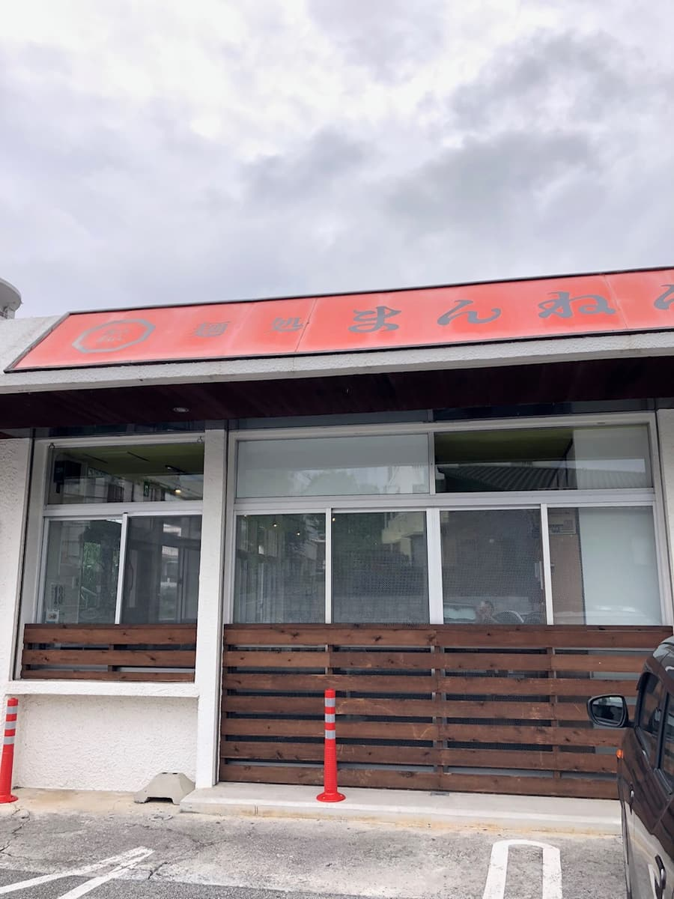
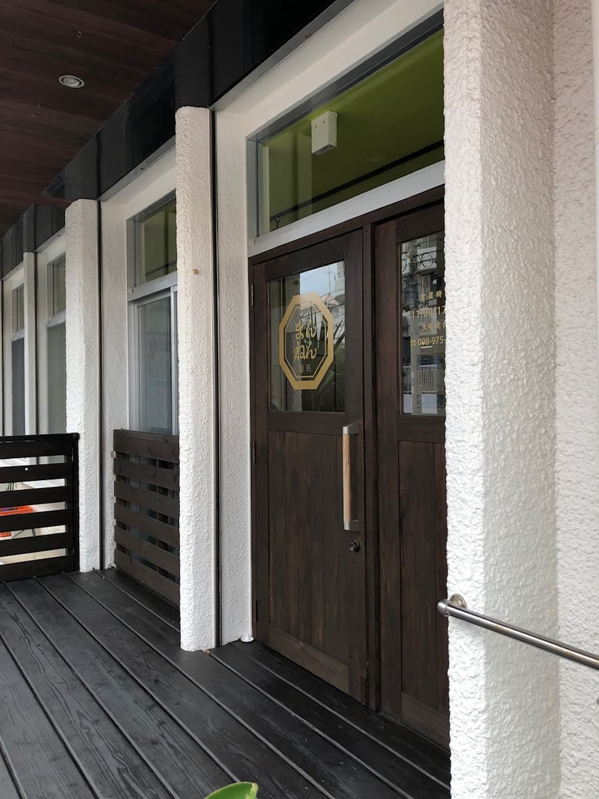
「面处 万年」位在浦添市仲西，从国道58号稍微转进去的地方。外观看起来是普通的冲绳面店，但进去看了菜单，发现和其他冲绳面店不一样。竟然像拉面店一样，可以从「盐」「酱油」「味噌」三种汤头中选择！😲
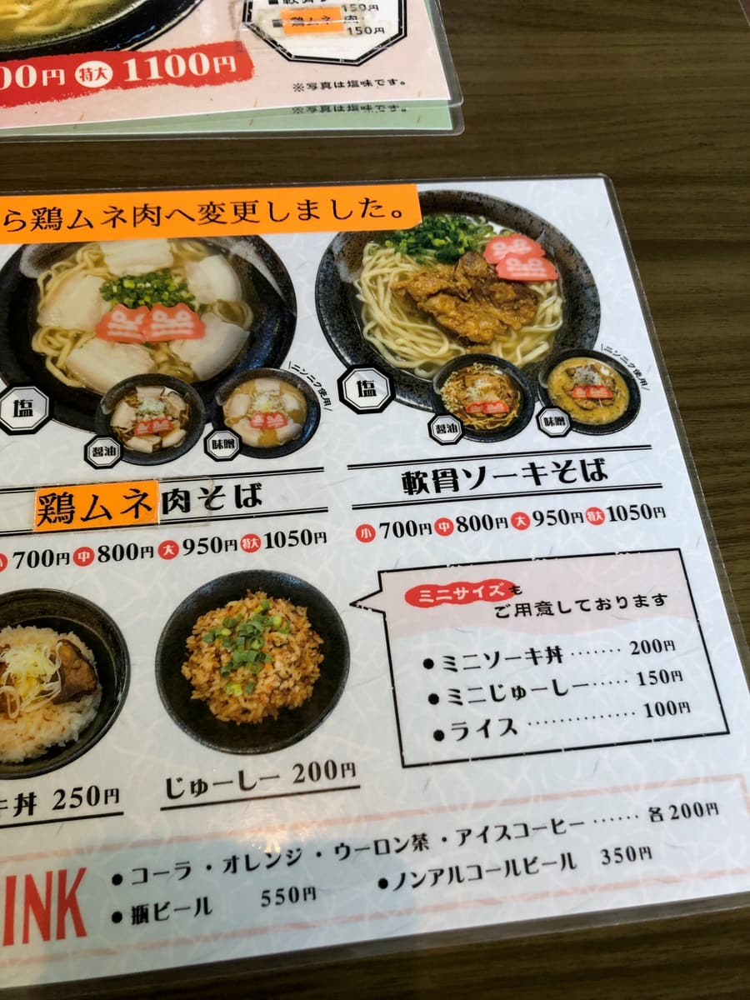
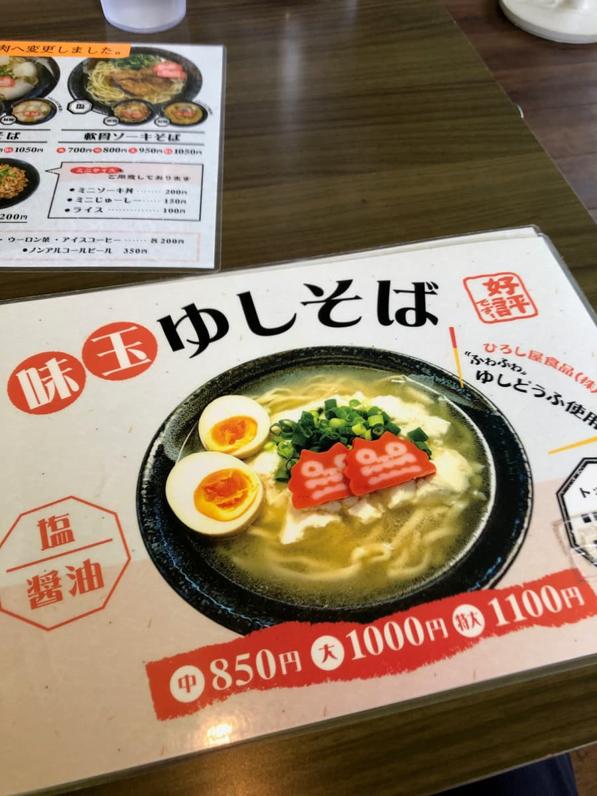
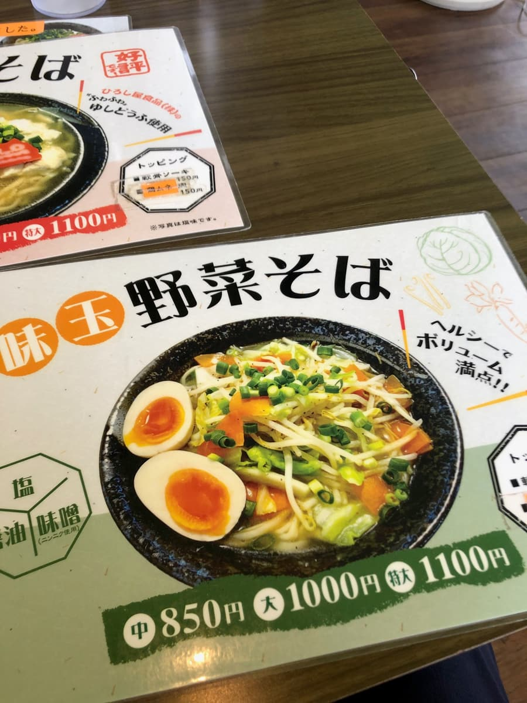
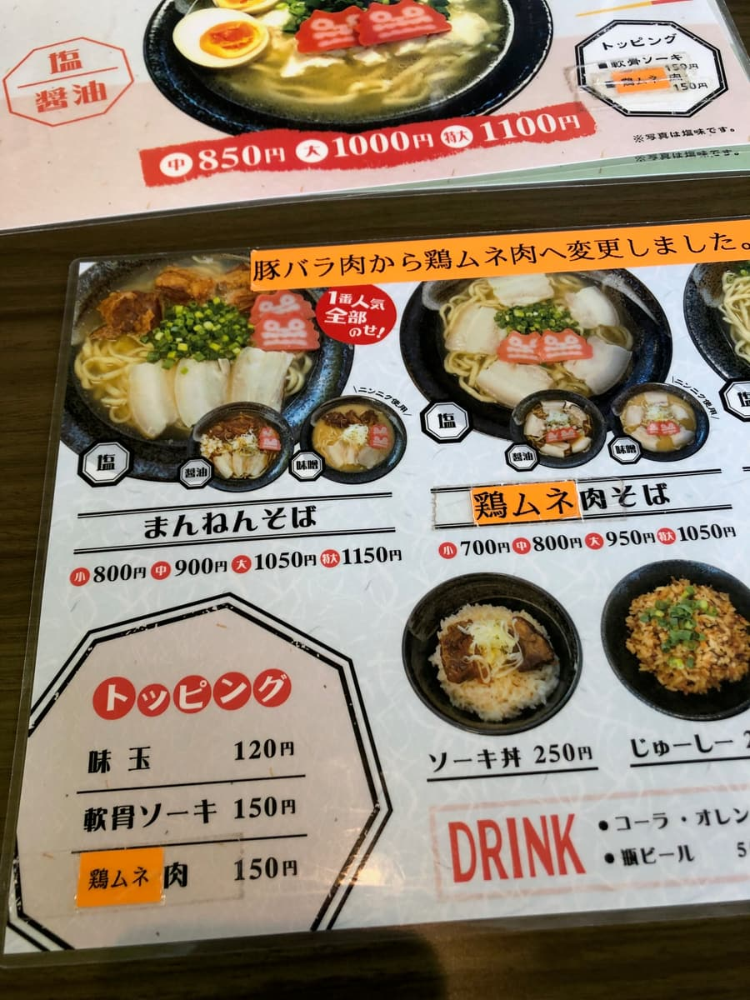
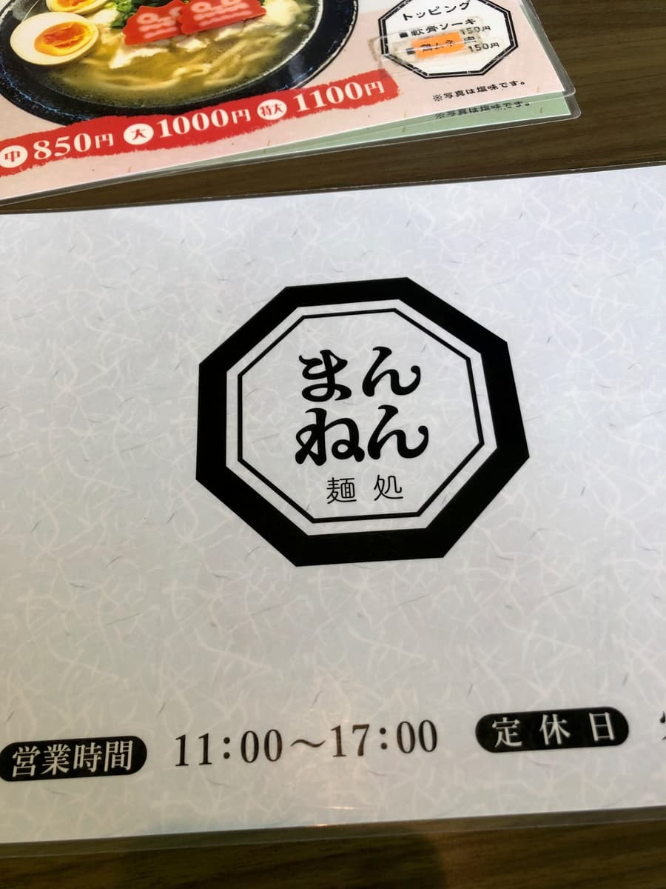
这真有趣。我之前在名护市的「和 食事处」吃过味噌汤头的冲绳面，所以这次也想点味噌汤头，但店员说「推荐盐味汤头喔」，我就乖乖改成盐味汤头了。
看菜单，除了招牌的「万年面」之外还有「蔬菜面」。两种好像都可以从盐、酱油、味噌中选择。而且菜单上方还写着说明，肉从猪五花改成了鸡胸肉。说到冲绳面，猪肉是定番，不过鸡肉也是新的尝试，很有意思🐔
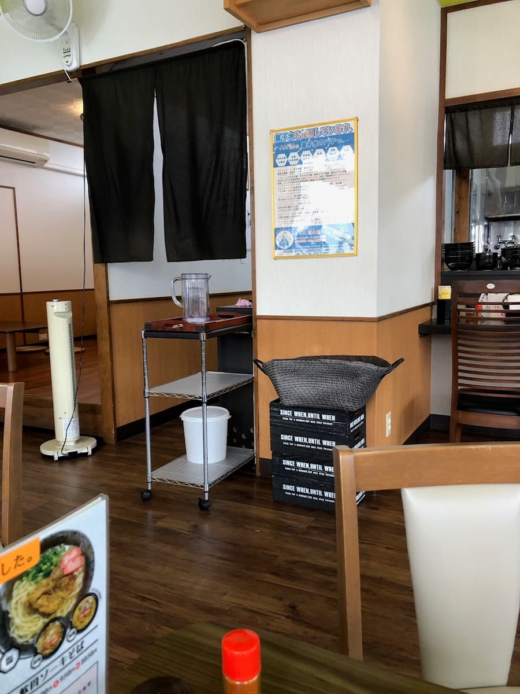
店内有吧台座位和桌位，简单但很干净。桌上摆着自制的岛辣椒泡盛和七味粉等调味料。
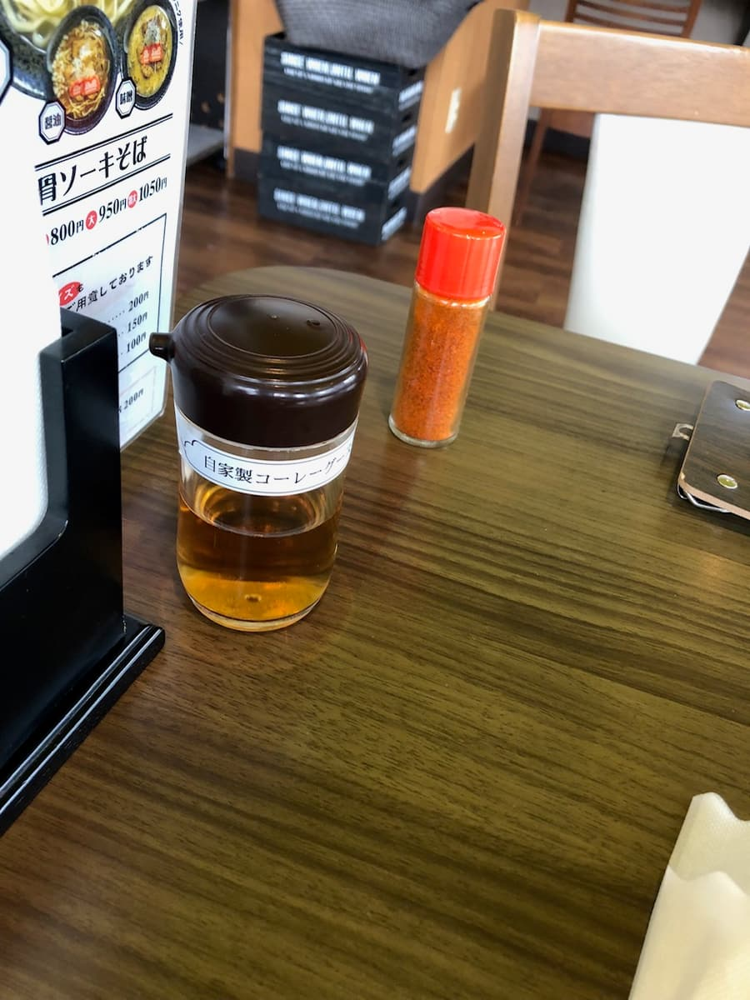
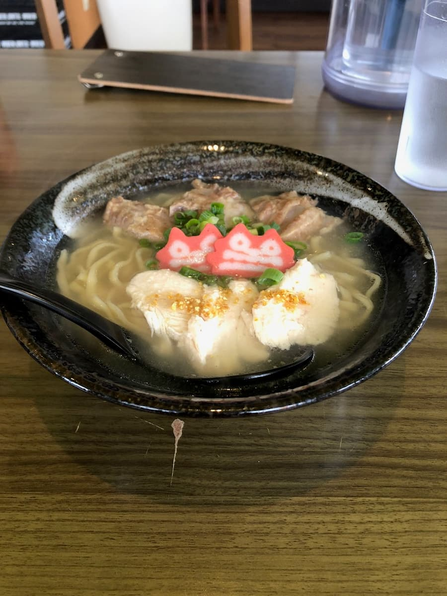
点的「万年面（盐味）」上桌了！外观是清澈的汤头，配上鸡胸肉、葱花，还有醒目的红色鱼板，色彩鲜艳😄
先从汤开始喝一口。咦？这与其说是冲绳面，味道更像拉面的汤！是以鸡骨高汤为底的盐味汤头，还能感受到芝麻油的香气。冲绳面特有的猪骨风味不太明显，不过这样也很好吃😋
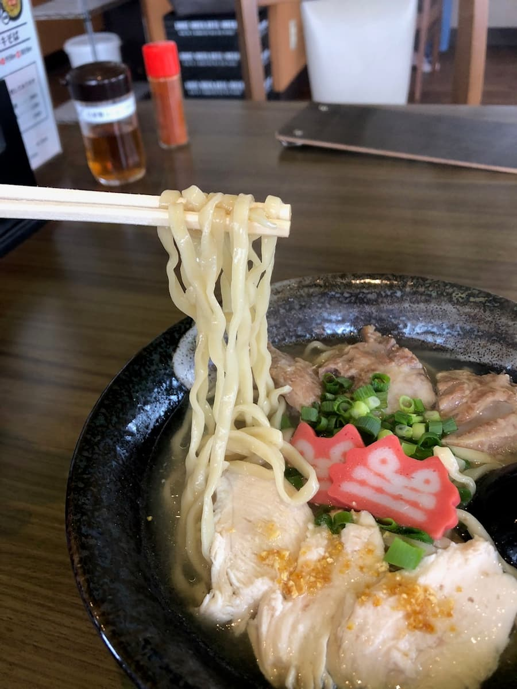
接着吃面。是中细的微卷面，口感滑溜又带点Q弹，我想说是不是自家制的生面呢？和汤头也很搭，有好好地裹住汤汁。
配料的软骨排骨是清爽系的调味，炖得非常软嫩。从猪五花改成的鸡胸肉，意外地和这个汤头很合，没有违和感。盐味汤头的爽口滋味和鸡肉的搭配，反而感觉很自然。
吃完后我突然想到：「下次也想试试味噌汤头」。冲绳面的味噌汤头会是什么味道呢？让我好奇了起来。
我觉得「面处 万年」在守护冲绳面传统的同时，加入盐、酱油、味噌的选择，追求着冲绳面的新可能性。虽然是创作系的冲绳面，但我觉得是值得一试的一碗😊
评分（10.5分/15分）：这是一间可以选择盐、酱油、味噌汤头，很有个性的冲绳面店。这次的盐味汤头与其说是冲绳面，味道更像拉面，不过这样也吃得很开心。面条滑溜，带有恰到好处的Q弹感，配料也煮得很软嫩。想享受冲绳面新变化的人，推荐来试试！
面：★★★✬☆（3.5）
汤头：★★★✬☆（3.5）
配料：★★★✬☆（3.5）